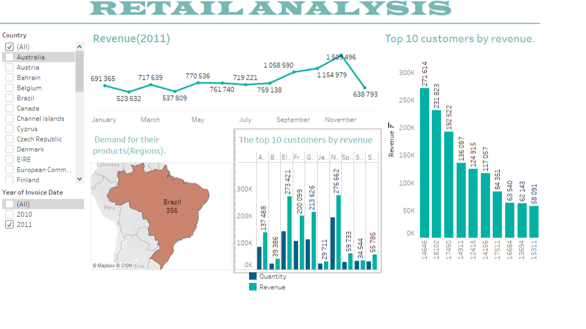

Created an interactive dashboard in Tableau to analyze retail sales, inventory, and customer behavior. This dashboard allows drill-downs by store, product, and time period, helping identify best-selling products, slow-moving inventory, and sales performance gaps. It's a critical tool for optimizing retail operations.
The primary objective of this project was to provide a visual and intuitive interface for retail stakeholders to explore performance metrics and make data-driven decisions related to inventory management, marketing strategies, and sales forecasting. The flexibility of Tableau allows for customized views and ad-hoc analysis.